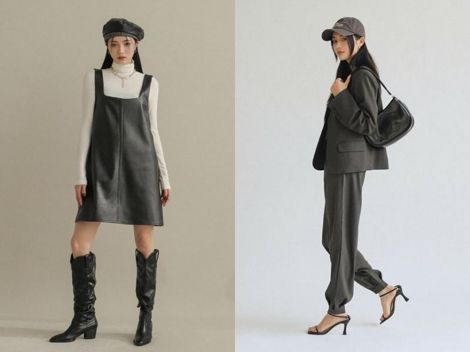
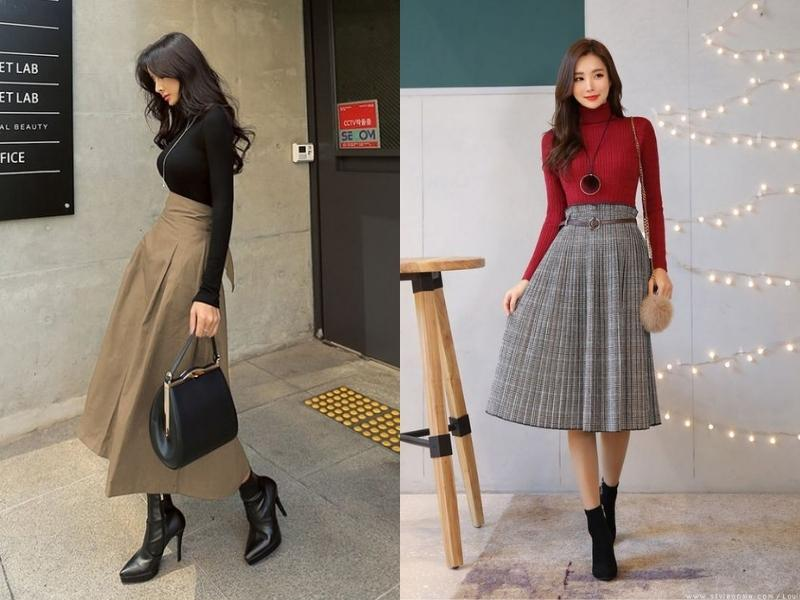

Tổng hợp 40+ cách phối đồ nữ thịnh hành cho mọi đối tượng
14/04/2023 THỜI TRANG, THỜI TRANG NỮ

Phối đồ sao cho phù hợp với cá tính và không lỗi thời sẽ giúp hình ảnh của các bạn nữ thêm hoàn hảo. Vậy xu hướng thời trang hiện nay là gì? Nên mix đồ như thế nào để sành điệu hơn? Shopee Blog sẽ giải đáp câu hỏi của bạn thông qua 40+ cách phối đồ nữ thời trang sau đây nhé!
Các nguyên tắc khi phối đồ nữ
Để thăng hạng nhan sắc và gu thời trang thì các bạn nam đừng nên bỏ qua các tiêu chí phối đồ sau đây nhé!
- Phù hợp phong cách cá nhân: Thời trang chính là “tiếng nói” tạo nên hình ảnh và thương hiệu của bạn. Do đó, bạn nên lựa chọn quần áo phù hợp với sở thích, tính cách và xu hướng cá nhân của mình.
- Phối đồ theo xu hướng mùa: Vào mùa hè, bạn có thể chọn họa tiết hoa nhí, chấm bi hoặc ô kẻ gingham. Đến ngày đông, các hoạ tiết như ô trám, dạ tweed trở thành xu hướng thịnh hành.
- Chọn trang phục phù hợp với dáng người: Lựa chọn quần áo phù hợp với dáng người là điều quan trọng, giúp tôn lên vóc dáng tự nhiên và che đi khuyết điểm cơ thể.
- Sử dụng phụ kiện phù hợp: Bạn nên lựa chọn phụ kiện phù hợp với set đồ và hoàn cảnh diện trang phục. Tuy nhiên, bạn không nên vượt quá 3 món phụ kiện cùng một chỗ.
- Chọn màu trang phục phù hợp với tone da: Đối với nữ da sáng, bạn nên chọn các gam màu pastel hoặc tone màu neon để tăng độ sáng cho làn da. Ngược lại, các gam màu ấm và trung tính sẽ thích hợp cho nữ da ngăm.

Chọn trang phục phù hợp với phong cách và dáng người sẽ giúp bạn có set đồ nữ đẹp
Gợi ý từ A-Z cách phối đồ nữ thời thượng
Xu hướng thời trang luôn thay đổi theo thời gian. Vì vậy, để có set đồ vừa sành điệu, vừa hợp xu hướng thì các bạn nữ đừng bỏ qua 40+ cách phối đồ nữ sau đây từ Shopee Blog nhé!
Các phong cách thời trang nữ theo dáng người
Phối đồ nữ gầy
Những cô nàng có dáng người thanh mảnh thường rất dễ trong việc chọn trang phục và phối đồ. Thay vì chọn những trang phục tối giản khiến bạn trở nên gầy hơn thì các item cách điệu sẽ giúp bạn trở nên thời trang và đầy đặn. Vì vậy, các bạn nữ gầy nên ưu tiên chọn những mẫu áo có thiết kế nhún và có họa tiết rực rỡ.
Các kiểu váy hoa tay phồng sẽ giúp các bạn nữ trông đầy đặn hơn
Ngoài ra, các mẫu trang phục nhiều tầng hoặc chân váy xòe cũng là item thích hợp cho các bạn nữ gầy. Kiểu dáng này không chỉ giúp bạn trở nên xinh xắn và đáng yêu hơn mà còn che đi đôi chân nhỏ và gầy của mình.

Chân váy xòe sẽ giúp bạn che đi đôi chân gầy của mình
Ngoài ra, bạn cũng có thể chọn các mẫu quần quần ống rộng để che khuyết điểm chân gầy. Nên kết hợp thêm áo màu sáng, cổ rộng hoặc cổ nhọn để thân hình trông đầy đặn hơn nhé!

Quần ống rộng cũng là trang phục nữ giúp bạn che đi khuyết điểm của cơ thể
Như vậy, Shopee Blog đã giúp bạn bỏ túi những cách phối đồ nữ phong cách và thời thượng để bản thân trở nên sành điệu, nữ tính và nổi bật hơn. Rất hy vọng với những gợi ý trên từ Shopee Blog về tips phối đồ và các shop thời trang, bạn có thể tự tin hơn khi diện đồ mỗi ngày.
Ngoài ra, bạn cũng có thể xem thêm nhiều cách phối đồ nữ đang hot hiện nay bằng cách tìm kiếm hashtag #ShopeeHaul và #ShopeeHaulOnShopeeBlog trên các trang mạng xã hội. Đừng quên theo dõi thêm nhiều mẹo thú vị về thời trang nữ trên Shopee Blog để cập nhật các xu hướng mới nhất nhé!